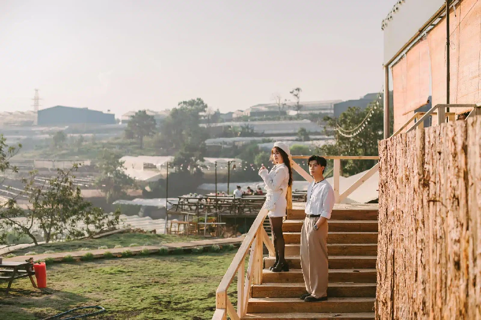
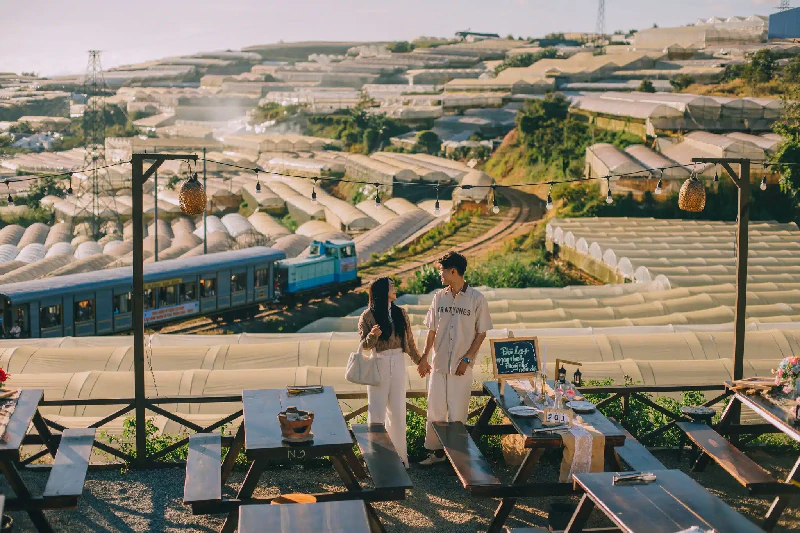

Khám phá góc chill yên bình tại làng Xóm Lèo Đà Lạt ban đêm

Mục lục bài viết
Đà Lạt vốn dĩ đã nổi danh với vẻ đẹp mộng mơ và không khí se lạnh đầy lãng mạn. Nhưng nếu bạn muốn tìm một góc riêng tĩnh lặng, đậm chất nghệ thuật và đầy chất thơ, Làng Xóm Lèo Đà Lạt về đêm chính là nơi lý tưởng để thư giãn và nạp lại năng lượng. Không chỉ là điểm dừng chân cho những tâm hồn yêu sự mộc mạc, nơi đây còn là “tọa độ chill” cực chất với ánh đèn lấp lánh, phong cách hoài cổ và hương vị ẩm thực địa phương hấp dẫn.
1. Làng Xóm Lèo nằm ở đâu tại Đà Lạt?
Khu Xóm Lèo tọa lạc tại một vị trí khá yên tĩnh, cách trung tâm thành phố khoảng 5km. Dù nằm ngoài khu vực đông đúc, nơi đây lại mang trong mình nét đẹp bình dị của vùng ngoại ô – với những con hẻm nhỏ, nhà gỗ cổ, và quán cà phê đậm chất Đà Lạt xưa. Cảm giác như thời gian chậm lại, cho phép bạn sống chậm và cảm nhận trọn vẹn từng khoảnh khắc.
2. Xóm Lèo Đà Lạt ban đêm có gì đặc biệt?
Không gian lãng mạn với ánh đèn huyền ảo
Khi màn đêm buông xuống, cả khu làng như khoác lên lớp áo mới – lung linh ánh đèn vàng từ các quán nhỏ, xen lẫn ánh sáng mờ ảo từ sương mù bảng lảng. Chỉ cần một tách cacao nóng hay ly sữa đậu nành ấm, bạn có thể thả hồn vào bầu không khí trong lành và lặng ngắm thành phố từ xa lấp lánh như dải ngân hà.
Phong cách cổ điển – Góc sống ảo cực nghệ
Từ những bức tường sơn màu pastel, bàn ghế gỗ cũ kỹ cho đến các bảng hiệu retro, mọi ngóc ngách ở đây đều trở thành phông nền hoàn hảo cho những bức ảnh “chất chill”. Dù bạn là tín đồ yêu nghệ thuật hay chỉ đơn giản là thích cảm giác yên tĩnh, nơi đây chắc chắn sẽ khiến bạn mê mẩn.
3. Trải nghiệm đặc sắc không thể bỏ qua ở Xóm Lèo Đà Lạt
Dừng chân tại những quán cà phê mang đậm dấu ấn riêng
Một số quán cà phê tại đây nổi bật không chỉ bởi view đẹp mà còn bởi cách decor cực kỳ cuốn hút:
☕ Tiệm Cà Phê Túi Mơ To – phong cách thơ mộng
☕ Xóm Cà Phê Nhà Gỗ – đậm chất vintage
☕ Quán Thông Ơi – view đêm cực đỉnh
Ẩm thực đêm ấm áp giữa tiết trời lạnh
Xóm Lèo về đêm không chỉ đẹp mà còn rất “ngon”. Bạn có thể thưởng thức đặc sản như:
🥢 Bánh tráng nướng
🥔 Khoai lang nướng
🥛 Sữa đậu nành nóng
Hương vị quen thuộc, nhưng trong khung cảnh se lạnh và yên bình, mọi thứ như ngon hơn gấp bội.
4. Quán nướng chill view đẹp – Tiệm Nướng & Chill Xóm Lèo

Một điểm đến không thể thiếu khi ghé thăm khu Xóm Lèo về đêm chính là Tiệm Nướng & Chill Xóm Lèo – quán nướng Đà Lạt nổi tiếng với không gian ấm cúng và view “xịn xò”.
Vì sao bạn nên dừng chân ở đây?
🌅 Ngắm hoàng hôn siêu lãng mạn trên đồi
🚂 Chiêm ngưỡng cảnh tàu chạy ngang độc đáo
🌃 Không gian nhà lồng lên đèn lung linh
🍲 Món nướng & lẩu gà lá é đậm vị, chuẩn gu Đà Lạt
📍 Địa chỉ: 113 Huỳnh Tấn Phát, Phường 11, Đà Lạt, Lâm Đồng 67000
📞 Hotline: 076.45.27.336 | 08.99.42.84.34 | 0902.91.22.40
🌐 Fanpage: https://www.facebook.com/nuongxomleo/
💬 Inbox: https://m.me/nuongxomleo
🗺 Google Map: https://maps.app.goo.gl/W4ygihLS8LQ1YiSK8
5. Lịch trình gợi ý khám phá Đà Lạt đêm qua Xóm Lèo
Bạn có thể kết hợp tham quan nhiều điểm thú vị theo lịch trình gợi ý sau:
🕯 17:00 – Tản bộ quanh Hồ Xuân Hương, hít thở không khí trong lành
🍡 18:00 – Ghé Chợ Đà Lạt, thưởng thức ẩm thực đường phố
☕ 19:00 – Lên Xóm Lèo, dừng chân ở quán cà phê chill view đêm
🔥 20:00 – Kết thúc bằng bữa tối tại Tiệm Nướng & Chill Xóm Lèo
🎯 Kết Lại – Một đêm thơ mộng tại khu chill Xóm Lèo Đà Lạt
Nếu bạn đang tìm một điểm đến mới mẻ, ít ồn ào nhưng đầy cảm xúc tại Đà Lạt, hãy dành một tối để khám phá Xóm Lèo. Dù là đi một mình hay cùng người thân, nơi đây chắc chắn sẽ để lại trong bạn những ký ức thật nhẹ nhàng, thơ mộng và đầy ắp cảm hứng. 🌙✨